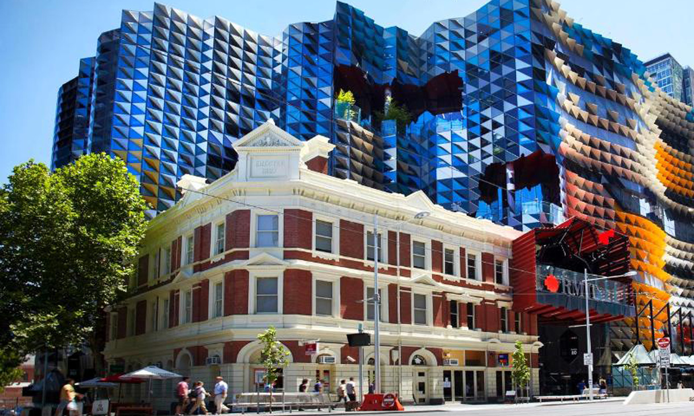

Purpose
Why I chose RMIT
The reason why I chose to come to RMIT is that I heard it is a great university for learning IT and the fact that it is located near Melbourne Central where all the great foods are located. The thing I want to learn from this course is the skills that will allow me to secure a job in the future.
My intrest In Information Technology
My Interest in IT began when I was in high school when I discovered that there is technology everywhere around us. I realised that Technology is something that is just not only something we touch but invisible as well such as the cloud and the Wi-Fi. I used to think that the Wi-Fi is something that was provided from a little box but the more I learned about it the more fascinated I got the more I learned.
